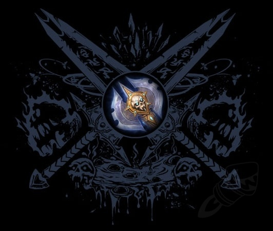

Blood
Forged in shadow and risen from death, Blood Death Knights thrive where others fall. Drawing power from blood magic and necrotic resilience, they twist pain into strength, binding their flesh with unholy will. In the heart of battle, they are immovable — siphoning life from foes and standing unbroken against the tide. With each heartbeat, they drain their enemies to sustain themselves, wielding massive weapons with crushing force and unrelenting resolve.
Frost
Born of death and bound by ice, Frost Death Knights are the embodiment of winter’s wrath. With runeblades crackling with freezing energy, they strike with lethal precision and ruthless efficiency. Their presence chills the air, their blows slow the heart — and their enemies are left frozen, shattered, and forgotten. Masters of dual-wielded devastation or two-handed annihilation, they unleash bursts of unstoppable damage, controlling the flow of battle with unrelenting speed and supernatural chill.
Unholy
Rot. Decay. Unrelenting dread. Unholy Death Knights are not warriors — they are apocalyptic forces made flesh. Wielding pestilence as a weapon and commanding legions of the dead, they spread corruption with every blow and turn the battlefield into a writhing charnel ground. Infused with necrotic energy, they wear down foes with diseases, shadow magic, and undead monstrosities — including the ever-loyal ghoul at their side, ready to tear flesh from bone. As their power grows, so too does the plague… until everything dies.
For a more detail about the history of Death Knights and their tainted legacy please visit the linked wiki. It will contain information about the gameplay of the class and the lore of the class throughout the history of the Warcfraft world.